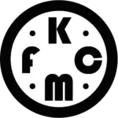
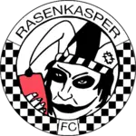
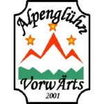
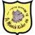

Spielplan
| Datum | Gegner | Ort | Ergebnis |
|---|---|---|---|
| 26. März |  KFCM | Auswärts | 4:5 |
| 2. April |  FC Rasenkasper | Auswärts | 2:4 |
| 21. April |  Vorwärts Alpenglühn AH | Auswärts | 0:1 |
| 7. Mai | Aerospace Tentomaxers | Heim | 5:2 |
| 12. Mai | Sporting Gears | Auswärts | 6:0 |
| 15. Mai | FC Super Smash Bros. | Heim | 2:1 |
| 18. Mai | MS United | Heim | 0:2 |
| 21. Mai |  FC Munich Kickers 06 | Heim | 6:5 n. E. |
| 29. Juni | Arsenal Longdong | Heim | 10:9 n. E. |
| 2. Juli | FC Ballet Blanc | Heim | 2:1 |
| 16. Juli | 1.Fc Georgia München | Auswärts | 4:1 |
| 23. Juli |
 FC Schmerzgebirge Aua
FC Schmerzgebirge Aua
|
Auswärts | 2:3 |
| 12. August |
|
Auswärts | 7:0 |
| 10. September |
 FC München 62
FC München 62
|
Heim | 3:1 |
| 8. October |
 1. FC Bavaria München
1. FC Bavaria München
|
Heim | 7:0 |
| 15. October |
 BSG Lokomotive München
BSG Lokomotive München
|
Auswärts | 4:1 |
| 15. October |
 Internationale Kickerz
Internationale Kickerz
|
Auswärts | 2:4 |